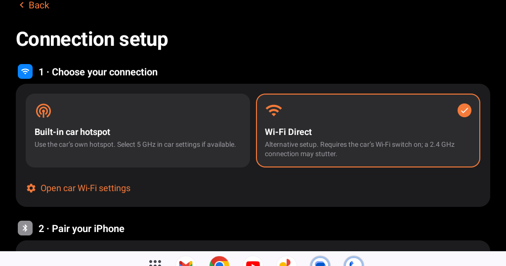
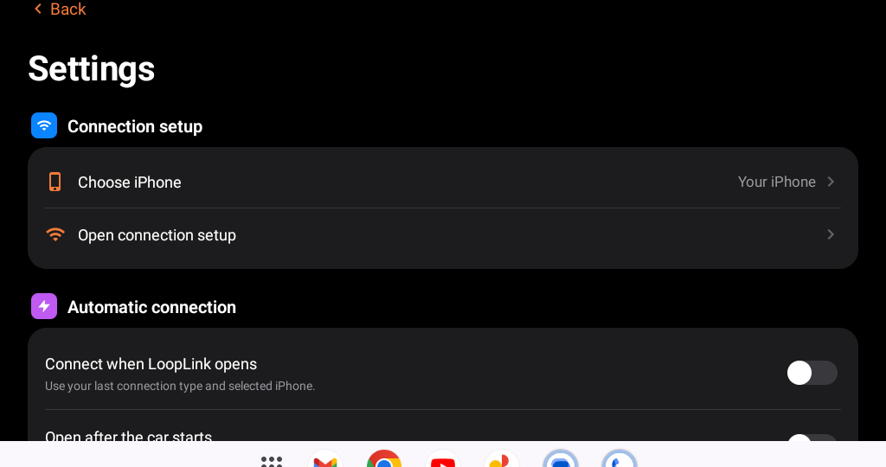

Free and open source · Android 9+
CarPlay on the Android panel already in your car.
LoopLink turns your Android head unit into wired or wireless Apple CarPlay. Maps, music, calls and Siri from your iPhone, with no dongle and no extra box.


Compatibility
LoopLink runs on the panel, not the car. If your car has an Android head unit, it should work. These are popular cars in Pakistan where owners fit these panels:
- Suzuki SwiftAftermarket Android panels
- Toyota Corolla AltisAftermarket Android panels
- Honda CityAftermarket Android panels
- Generic Android panels9″ and 10″ head units in any car
Your panel needs
- Android 9 or newer, with APK installs allowed
- Bluetooth and Wi-Fi for wireless CarPlay
- Android 10 or newer for Wi-Fi Direct; otherwise use the car hotspot or USB
- A USB data port for wired CarPlay
Panels differ in hardware and firmware, so some may not work. Car names are listed only to describe where these panels are fitted; LoopLink is not affiliated with Suzuki, Toyota or Honda.
Install in five steps
- DownloadGet the APK on the panel's browser, or copy it to a USB drive.
- InstallOpen the APK on the panel and allow installs from this source.
- PairPair your iPhone with the car's Bluetooth.
- Set upOpen LoopLink, go to Settings → Connection setup and pick car hotspot or Wi-Fi Direct.
- ConnectTap Connect phone and allow CarPlay on your iPhone. Prefer a cable? Tap Connect with USB.
Made for the road
- Wired and wirelessUSB, car hotspot or Wi-Fi Direct.
- Big, simple screensLarge tiles that fit short car displays.
- Siri on the volume knobSiri replies follow your media volume.
- Five languagesEnglish, Chinese, Arabic, Russian and Spanish.